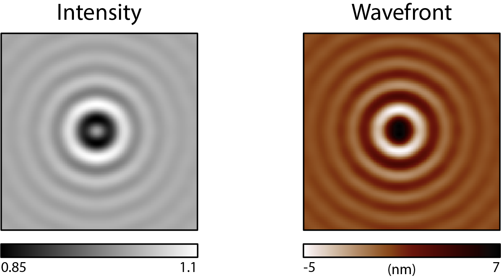

Introduction
What are QLSI and CGM?
QLSI (quadriwave lateral shearing interferometry) is an optical imaging technique capable of mapping both the intensity and the wavefront profile of a light beam.[1] Here are for instance intensity and wavefront images of a Bessel-like beam:
{kind=link}
This technique belongs to the quantitative phase imaging (QPI) family, the wavefront \(W\) being simply related to the phase \(\phi\) by the expression \(\phi=\frac{2\pi}{\lambda}W\).
QLSI is based on the the association of a regular camera with a special 2 dimensional diffraction grating, separated with each other by a millimeter distance.

When a QLSI system is implemented in an optical microscope, the measured wavefront becomes the optical path difference (OPD) created by the micrometric object placed at the sample plane. This configuration is usually referred as cross-grating wavefront microscopy (CGM).
The PhaseLAB Matlab toolbox is aimed to deal with QLSI images.
The 3 main functionalities of PhaseLAB
PhaseLAB can be used for 3 main purposes:
Convert experimental QLSI interferogram images into images of interest, namely, wavefront, intensity, wavefront gradients, etc. Process and do measurements on these images using code lines, or using a GUI interface (crop, plot crosscuts, filter, flatten, numerically refocus, measure dry masses, export, make movie, etc).
In silico QLSI, that is simulate QLSI intensity and wavefront/phase images of nanoparticles acquired with a specific microscope.
From the In silico QLSI simulation, compute the theoretical interferogram recorded by the camera in the presence of the QLSI grating, and process it as if it were an experimental interferogram.
The 3 functionalities are sketched below:

This Matlab toolbox uses OOP
Instead of using functions with an arbitrary large number of input parameters, which can be quite cumbersome, the PhaseLAB Matlab toolbox leverages on the elegance of object oriented programming (OOP). Basically, instead of using a function that needs all the parameters of the microscope (magnification, numerical aperture, wavelength, etc)
output = fun(M, NA, wl);
one simply defines a variable (an object), MI, that gathers all these properties. They can be accessed by writing MI.M, MI.NA, MI.wl. This way, the function only requires a single input parameter, favoring a good readibility of the code
output = fun(MI);
Simple PhaseLAB codes
As explained above, there are three categories of codes. Here are some code examples for each of them, the simplest one can imagine.
%% code to import an experimental interferogram, process it, and display the QLSI images
MI=Microscope(OB,180,'Silios_mono');% Create of the Microscope object
IL = Illumination(532e-9); % Create of the Illumination object
Itf = imread('data/Itf.tif'); % Import the object interferogram
Ref = imread('data/Ref.tif'); % Import the reference interferogram
Im = Interfero(Itf,MI); % Make the interferogram object
Im0 = Interfero(Ref,MI); % Make the reference interferogram object
Im.Reference(Im0); % Assign the reference to the interferogram
IM = QLSIprocess(Im,IL); % Process the QLSI images
IM.figure; % Display the QLSI images
%% code that simulates the image of a gold nanoparticle
lambda = 530e-9; % Illumination wavelength
Npx = 300; % Final image with Npx*Npx pixels
n = 1.33; % Refractive index of the surrounding medium
ME = Medium(n);
OB = Objective(200,1.3,'Olympus');
CGcam = CGcamera('Silios_mono');
MI = Microscope(OB,180,CGcam);
IL = Illumination(lambda,ME);
MI.CGcam.setDistance(d);
radius = 50e-9; % Nanoparticle radius
DI = Dipole('Au',radius);
DI = DI.shine(IL);
IM0 = imaging(DI,IL,MI,Npx);
IM0.figure
The next sections break apart these codes lines.